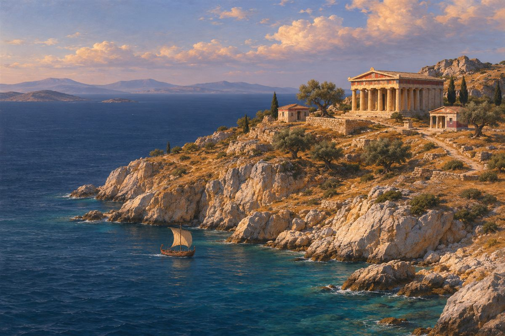
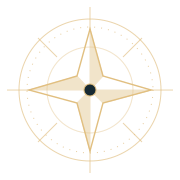
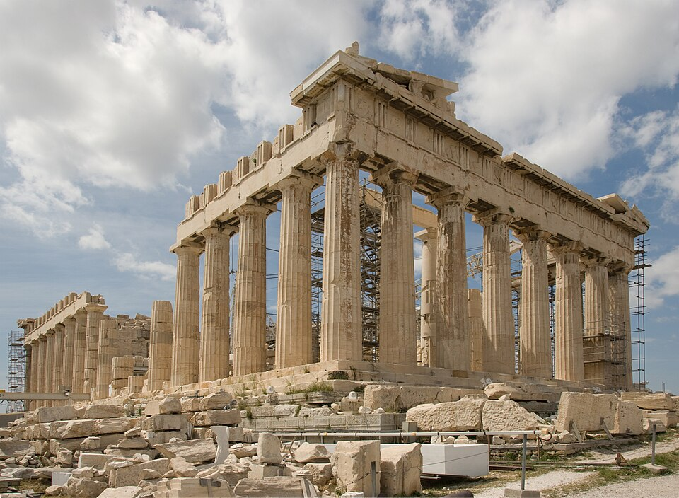
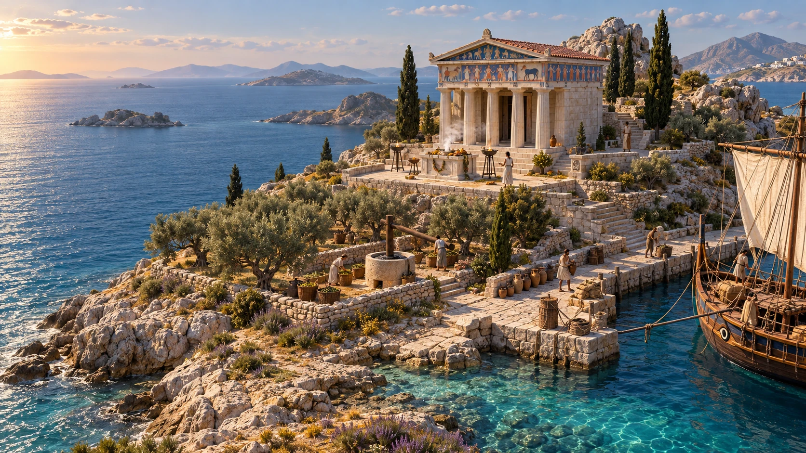

Explora la isla
0 de 4 lugares explorados
Sobre esta ilustración

Ver una pista
Aprender más sobre este lugar
Exploraste los cuatro lugares
Vuelve a una estación o revisa tus hallazgos en el cuaderno.



0 de 4 lugares explorados

Vuelve a una estación o revisa tus hallazgos en el cuaderno.